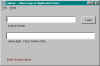

New Copy of Application Class,
com.tymeac.client.jframe.TyNewCopy
This frame class either reloads a Queue's Processing Application Class or loads an alternate Queue's Processing Application Class.
The non-frame version of this class is TyNewCopyClient, below.
Changes to the processing code are sometimes necessary. This process allows immediate reflection of those changes without taking the Tymeac Server down. Naturally, this is useful during testing. However, this is useful when using version numbers as part of the Class Name. For example:
Class, AccountPost_431, is the original Class.
Class, AccountPost_432, is the new Class.
Specify a New Class as AccountPost_432 and load this new Class as the Processing Application Class for the Queue.
If something goes wrong with this new Class, then simply restore the original, AccountPost_431, as the New Class and load this original as the Processing Application Class for the Queue.
Caution. All processing for a Queue should cease before using this procedure.
Tymeac does not check to see if any thread on the Queue is busy processing a request in a Processing Application Class. If threads are busy working through the wait lists then the change may take effect in the middle of the lists causing interesting results.
If a Tymeac Queue Thread is hanging in the application class, then you must kill that thread. The Id of the thread is in TyQueThd. TyQueMaint details the full name of the thread. Failure to do this may have undesirable side effects.
N.B. When using the URL option, the Processing Application Class may not be within the CLASSPATH or Java will load the class from the CLASSPATH and ignore the URL option. ALL classes instantiated by this Processing Application Class must also NOT be on the CLASSPATH but within the URL list.
There are three options:
Reload a Processing Application Class from the current URL. Tymeac instantiates a new URLClassLoader using the URL array of the current URLClassLoader. Tymeac loads the Processing Application Class as found in the Queue. In this way, the class loads into a new NameSpace and immediately reflects any changes from compiling. ALL classes instantiated by this Processing Application Class are loaded by the same URLClassLoader.
Specify only the Queue Name.Load a new or the same Processing Application Class from a URL list. Tymeac instantiates a new URLClassLoader using the URL array specified with the Class Name. Tymeac loads the Processing Application Class as found in the (new) Class Name. The original Processing Application Class may have been on the CLASSPATH. By using this option, you set a URLClassLoader as the new default.
Specify both a Queue Name and a (new) Processing Application Class with a URL list.Load a new Processing Application Class from the CLASSPATH.
Specify both a Queue Name and a (new) Processing Application Class.
 (click to link to full image)
{kind=link}
Elements
Queue Name -- Enter the name of the Tymeac Queue.
(new) Appl. Class -- Enter a new Class name and optional URL list, see the class naming and URL document.
Buttons
LOAD -- Loads the new Application Class.
Message Block at bottom : -- (xx) is the return code for the non-gui class. This is an information message:
(0) Successful -- Completed successfully.
(-1) Connection failure -- The RMI connection failed or the Tymeac Server returned an invalid message.
(1) Enter a New Class Name -- Required for the classpath option.
(2) New Class load error -- The load failed for the new Class.
(3) Queue name invalid -- As indicated.
(5) Enter a Queue Name -- This is always required.
(6) Original load was not with a URLClassLoader -- For option 1, when only entering a Queue Name the Original Class must have been loaded with a URLClassLoader.
(7) Re-load of original class, load error -- For Option 1, the load failed for the original Class.
(8) Invalid Class::URL format -- See the class naming and URL document for how to specify this information.
(9) Invalid URL format -- See the JavaDoc for how to specify a java.net.URL() with a single String constructor.
(10) New class name same as original -- For option 3, cannot reload a class on the classpath.
com.tymeac.client.TyNewCopyClient (JavaDoc)
This is the Non-GUI equivalent of the GUI Class, above. An example of how to use this class is: com.tymeac.demo.TyDemoClient_NewCopy.java in the <TymeacHome>source/com/tymeac/demo directory.
Constructor 1 -- has no arguments. This is for the RMI Server. The constructor gets a new instance of a Tymeac internal class that is similar to TySvrComm
Constructor 2-- is for the internal server. The single argument is the Tymeac Server Interface, TymeacInterface.
Instance Methods --
public int load(String que, String new_class) {
Returns an integer return code, see message block, above.
Parameters are the name of the que and the name of the new class. See elements, above.